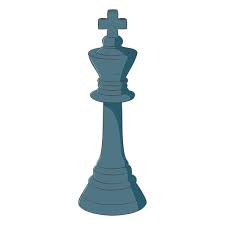
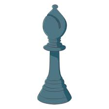

**Knights Gambit Cafe** was founded by Tathagat Aryan . During his JEE preparation time, the pressure and stress of studies made life overwhelming. Chess became an escape — a game that brought focus, calm, and clarity back to the mind. Move by move, it helped rebuild concentration and the joy of thinking strategically. Inspired by this experience, Knights Gambit Cafe was created to share that same feeling with others: a place where people can relax, challenge their minds, and enjoy the simple pleasure of playing chess while sipping a good cup of coffee.
